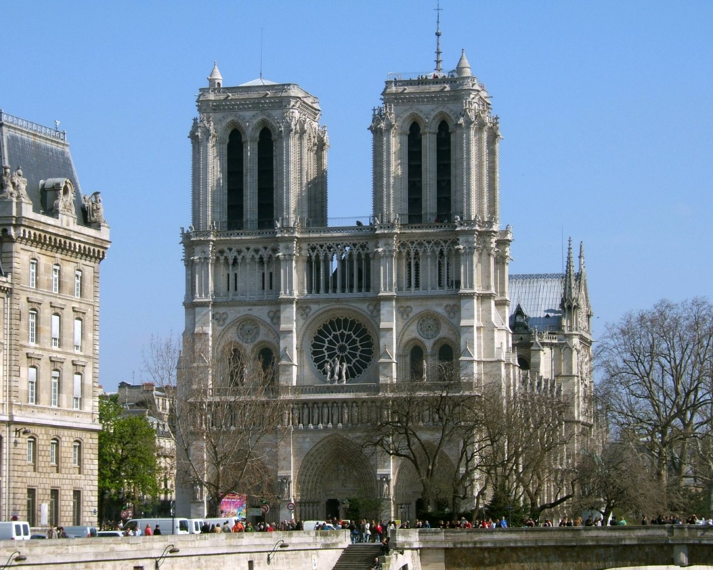
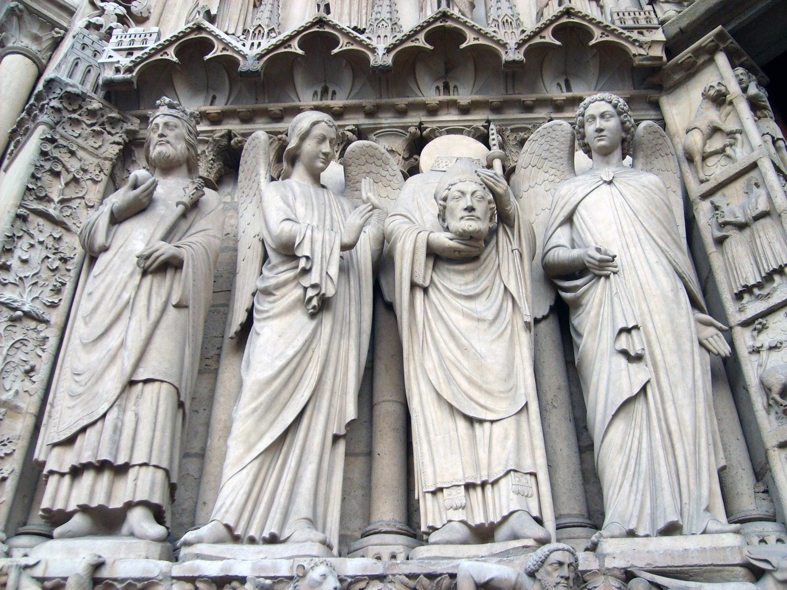
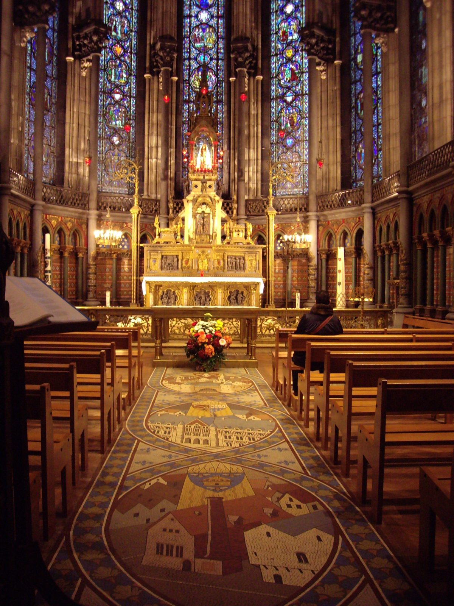

西岱岛东端的哥特主教堂，1163 年由主教莫里斯·德·苏利主持动工，主体到 14 世纪中叶基本完成。西立面双塔、三连拱门与三面玫瑰窗构成法国盛期哥特的范式；1844–1864 年维奥莱-勒-杜克主持大修，并加建木构尖塔。
2019 年 4 月 15 日火灾烧毁屋顶与尖塔，2024 年 12 月重新开放。本页照片为公开授权的实拍记录，不作视觉复原与自绘替代。
季节 / 天气素材缺口。本轮仅找到 3 张许可可核验的 CC0 实拍：西立面正面、门廊石雕群像、中殿内景。雪景、雨夜、黄昏等角度没有干净来源，按项目规则不硬凑、不拿别的建筑或自绘顶替。
照片 · 3 张 · 全部 CC0 / 公有领域

西立面 · 正面 · 晴（原站未标注具体时段与季节）
GoodFreePhotos《Notre-Dame Cathedral in Paris, France》· CC0 公共领域 · 2026-11-04 获取 · 原图 1280×1024，未裁切

门廊石雕 · 群像细部 · 晴（原站标题作「侧立面」，实为门廊雕像）
GoodFreePhotos《The Side of Notre-Dame in Paris, France》· CC0 公共领域 · 2026-11-04 获取 · 原图 2272×1704 → 压缩至 1500×1125

中殿内景 · 高窗直射光（原站未标注具体时段）
GoodFreePhotos《Inside the Notre-Dame in Paris, France》· CC0 公共领域 · 2026-11-04 获取 · 原图 2112×2816 → 压缩至 1200×1600
资料 · 写实条目
- 位置
- 法国巴黎第四区西岱岛（Île de la Cité），塞纳河西岸
- 年代
- 1163 年动工，1182 年主祭坛祝圣，西立面双塔 1200–1250 年，约 1345 年主体完成
- 风格
- 法国哥特；西立面属盛期哥特，后殿与飞扶壁接近 rayonnant 阶段
- 尺度
- 长约 128 m，宽约 48 m；双塔高 69 m，尖塔高 96 m（2024 年重建）
- 玫瑰窗
- 西玫瑰窗约 1225 年；北玫瑰窗 1250 年代；南玫瑰窗 1260 年代
- 修复
- 1844–1864 年由维奥莱-勒-杜克主持大修，并加建木构尖塔
- 火灾
- 2019 年 4 月 15 日屋顶与尖塔焚毁，石构主体与双塔保存
- 重开
- 2024 年 12 月 7–8 日重新开放
看点：西立面三连拱与圣母柱廊、南北玫瑰窗的彩玻璃、后殿飞扶壁的结构逻辑，以及中殿束柱向上的比例。